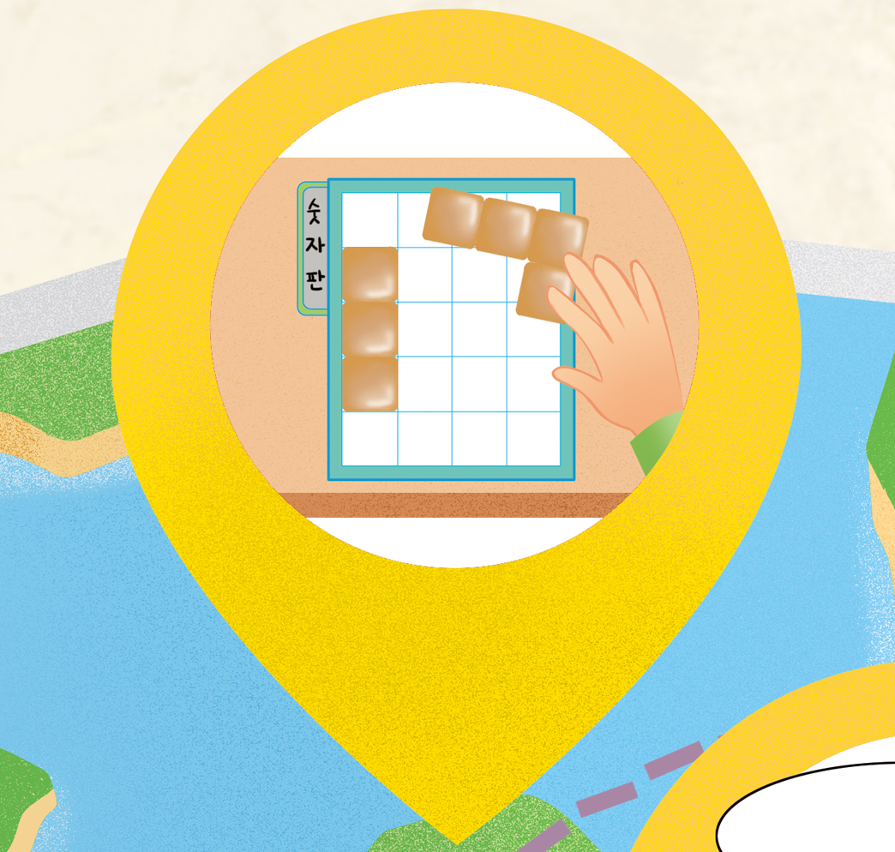
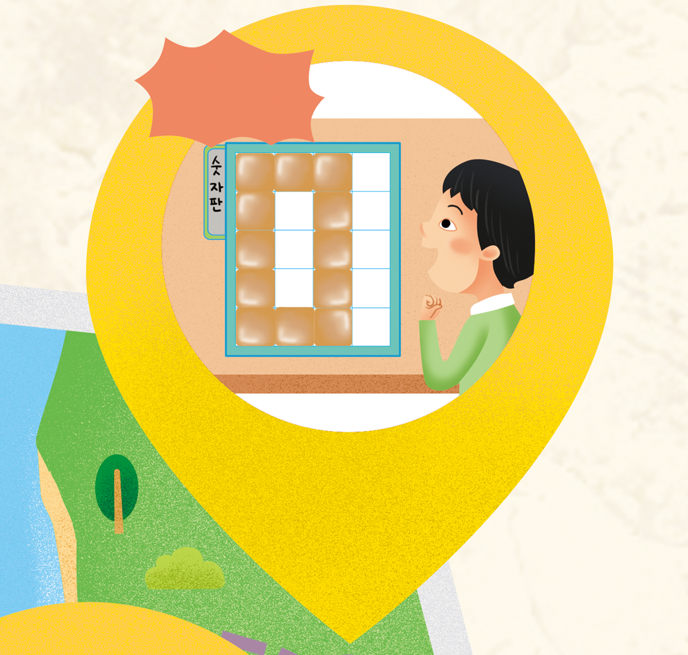

- 방법
- 물음 +
-
-
- 활동 방법
-
-
-
1
2~4명이 모둠을 만들어 각자 도형 조각과 숫자판을 자기 앞에 놓고, 수 카드 10장을 잘 섞어서 가운데에 뒤집어 놓습니다.
-
-
8을 뽑으면 수 카드를
그냥 가져가고
새로 뽑을 수 있습니다.-
2
순서를 정하여 수 카드를 한 장 뽑아서 숫자가 보이도록 바닥에 내려놓습니다.
-
-

-
3
내려놓은 수 카드를 보고 도형 조각을 이용하여 숫자판 위에 같은 숫자 모양을 만듭니다.
-
-
내가 가장 먼저 만들었어.
이 수 카드는
내가 가져갈게.완성!-
4
가장 먼저 숫자를 만든 친구가 수 카드를 가져갑니다.
-
-
내가 제일 많아!
-
5
수 카드가 모두 없어질 때까지 놀이를 계속하고 가장 많은 수 카드를 가진 친구가 이깁니다.
-
-
-
-
도형 조각으로 숫자 모양을 어떻게 만들 수 있는지 이야기해 보세요.
도형 조각을 밀고, 뒤집고, 돌려서 숫자 모양을 만들 수 있습니다.